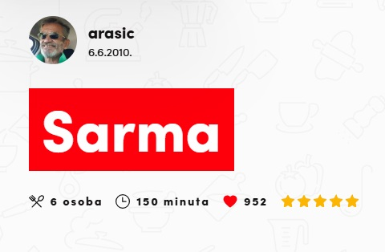

Radi
Opet radiiii


Sastojci
SARMA
- 1 velika glavica kupusa (1,5 -2 kg)
- 1 kg miješanog mljevenog mesa
- 2-3 žlice sjeckane slanine i/ili pršuta
- 150 gr riže
- 2 glavice luka
- 1 jaje
- peršina
- 25 gr soli
- 1 žličica vegete
- 1 žličica papra ili više po ukusu
- suho meso slanina, kožice suhe, rebra i sl.
- svježe meso krmenadl, vratina
- ili mesnate kosti od vratine i sl.
- lovor, papar u zrnu
Umak
- 0,5 l pasirane rajčice
- 2-3 žlice brašna
- 3-4 žlice ulaj ili masti
- 1-2 češnja češnjaka
- Bosiljak
- majčina dušica
- crvena paprika
- vegeta pikant ili malo čilija
Priprema
Sarma
- Prodinstajte sitno sjeckani luk i slaninu
- dodajte rižu i kratko dinstajte, da se zacakli
- dodajte mljeveno meso, promješajte i čim promjeni boju maknite s vatre neka se rashladi
- pomješajete meso, luk, špek, rižu, jaje, kosani list peršina, začine, pustite da malo odstoji, pa ponovo promješajte
- Odvojite listove kupusa i odrežite zadebljanja, po potrebi isperite pod hladnom vodom
- Uvijajte sarme veličine po ukusu, kod mene su prve velike pa sve manje, ali to ne smeta …
7.
Obreske od listova, i ostatak glavice kupusa sitno nasjeckate i dio stavite na dno lonca, ostalo između sarmi
8.
- sarme slažite u krug i između suho meso i sl…
- gore stavite (po ukusu) svježe meso i/ili mesnate kosti
- lovorov list i papar u zrnu
- prelijte umakom (ili samo vodom )
- cca 2 h, dolijte vode po potrebi

Umak
- na masnoći kratko popržite brašno, protisnuti češnjak
- dodajte malo crvene paprike
- podlijte rajčicom, dodajte začine (po ukusu)
- dolijte vode cca 1, 5 l, miješajući
- kada provri prelijte preko sarme
- S krumpirom, kruhom ... nacrt - buljogled

- i još ... bokocrt - škicogled
Posluživanje
Meni je sarma bolja s ovakvim umakom, mada neki vole samo bistru juhu …
Odlučio sam se dinstati sva 3 glavna sastojka, ali meso vrlo kratko, sarma je rahla i vrlo ukusna ….